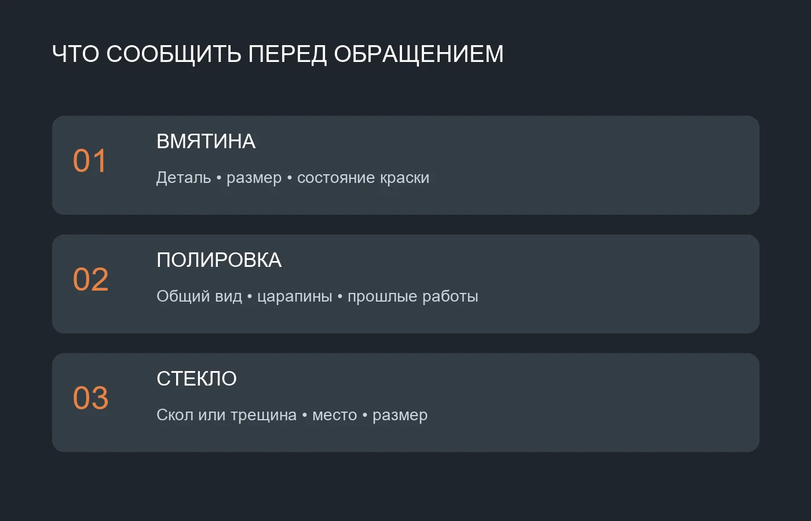

Полировка кузова в BlackBox · Камиль Зиганшин · Яндекс Карты
Вмятины. Полировка. Автостёкла.
Ремонт вмятин без покраски, полировка кузова и ремонт лобовых стёкол в Казани. Расскажите о повреждении — обсудите подходящий способ работы и договоритесь об осмотре в BlackBox на Седова, 24, корпус 1.
При обращении покажите вмятину с нескольких ракурсов и сообщите, повреждена ли краска. Возможность восстановления без окрашивания зависит от формы повреждения, состояния покрытия и доступа к детали; подходящий способ уточняйте у мастерской.
02
Полировка кузова
Опишите, какие следы на поверхности вас беспокоят: потускнение, мелкие царапины или неоднородный блеск. Уточните, какие участки нуждаются в обработке. Глубокие повреждения покрытия требуют отдельной оценки и могут не устраняться полировкой.
03
Ремонт лобовых стёкол
Сообщите, где находится скол или трещина, каков примерный размер и когда появилось повреждение. Возможность ремонта зависит от состояния стекла. До визита уточните, подходит ли ваш случай для восстановления и какие фотографии нужны специалисту.

Автомобиль в BlackBox · Максим Матвейчев · Яндекс Карты
BLACKBOX · КАЗАНЬ
BlackBox на Седова
Вмятина на двери, царапины на лаке и скол на стекле — разные задачи. Начните с разговора: назовите автомобиль, опишите повреждение и уточните, какие фотографии помогут его оценить. Перед поездкой согласуйте время осмотра и расположение въезда. Способ, объём и стоимость работ обсудите с мастерской до их начала.
С чем можно обратиться
Расскажите, что изменилось во внешнем виде автомобиля и какого результата вы ждёте. Для первого разговора пригодятся следующие подробности.
Появилась вмятина: назовите деталь, примерный размер и состояние лакокрасочного покрытия.
Кузов потерял блеск: покажите общий вид поверхности и отдельные следы при хорошем освещении.
На лобовом стекле скол или трещина: обозначьте расположение и примерную протяжённость повреждения.
Что обсудить для оценки стоимости
На объём работ обычно влияют размер и характер дефекта, материал и расположение детали, состояние покрытия, доступ к повреждённому участку и следы предыдущего ремонта. Для стекла важны расположение и развитие повреждения. По фотографиям можно начать обсуждение, но они не всегда показывают глубину дефекта.
Попросите объяснить выбранный способ и согласовать состав работ, стоимость и сроки. Отдельно уточните, как будут согласовывать дополнительные операции, если они понадобятся после осмотра.
Подготовьте информацию заранее
Сделайте общий снимок автомобиля, фотографию всей повреждённой детали и крупный план. Добавьте ракурс под углом: отражение помогает показать форму вмятины. На снимке стекла обозначьте место дефекта так, чтобы было понятно расстояние до края. Не пытайтесь самостоятельно разбирать элементы ради фотографии.
Сообщите марку, модель и год автомобиля, когда заметили повреждение, красилась ли деталь и проводились ли работы ранее. Если история неизвестна, так и скажите. Перед поездкой согласуйте удобное время и уточните, нужно ли мыть автомобиль перед осмотром.
Как обратиться в мастерскую
01
Свяжитесь
Позвоните или напишите по опубликованному контакту, назовите автомобиль и кратко опишите задачу.
02
Обсудите детали
Передайте фотографии, задайте вопросы о возможном способе ремонта и согласуйте необходимость осмотра.
03
Согласуйте визит
Уточните время, въезд и условия приёма на Седова, 24, корпус 1 перед поездкой.